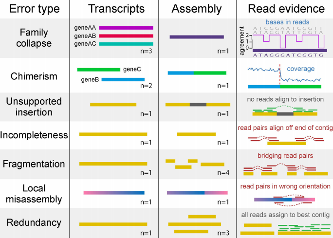

La idea es cuantificar el rango de tipo de errores conocidos que ocurren durante el ensamble denovo de transcriptomas:
Error type:
- Family collapse (gene AA, AB, and AC collapsed as a single hybrid contig…bases in read as a disagrement in their entropy)
- Chimeris (contig compuse from two disting transcripts (may or may not be related)…coverage is non uniform)
- Unsupported insertion (the new contig contain a fragment inserted along them, therefore pseudo-contig have not good aligned…no reads align to insertion)
- Incompletness (the contig lengh is small in comparison with the reads-gene where it came…read pairs align off end of contig)
- Fragmentation (A transcript result in a small diferent set of contig …result in bridging reads pairs)
- Local misassembly (transcript assembly is in a wrong orientation afer k-mering…read pairs in wrong orientation …These are detectable when both members of a read pair align to a single contig, but in a manner inconsistent with the sequencing protocol) <– no detected in a non-strand mode setup
- Redundancy (A transcript result in a diferent set of contigs … all reads assign to best contig)
transrate paper

/LUSTRE/bioinformatica_data/RNA/ricardo/bioinformatics/transrate-1.0.3-linux-x86_64/transrate
./transrate \
--assembly Trinity.fasta \
--left R1.P.qtrim.fq \
--right R2.P.qtrim.fq \
--threads 96 \
--output gcontigs 1> transrate.log &
This is a normal paragraph following a header. GitHub is a code hosting platform for version control and collaboration. It lets you and others work together on projects from anywhere.
This is a blockquote following a header.
When something is important enough, you do it even if the odds are not in your favor.
// Javascript code with syntax highlighting.
var fun = function lang(l) {
dateformat.i18n = require('./lang/' + l)
return true;
}
# Ruby code with syntax highlighting
GitHubPages::Dependencies.gems.each do |gem, version|
s.add_dependency(gem, "= #{version}")
end
- This is an unordered list following a header.
- This is an unordered list following a header.
- This is an unordered list following a header.
- This is an ordered list following a header.
- This is an ordered list following a header.
- This is an ordered list following a header.
| head1 |
head two |
three |
| ok |
good swedish fish |
nice |
| out of stock |
good and plenty |
nice |
| ok |
good oreos |
hmm |
| ok |
good zoute drop |
yumm |
There’s a horizontal rule below this.
Here is an unordered list:
- Item foo
- Item bar
- Item baz
- Item zip
And an ordered list:
- Item one
- Item two
- Item three
- Item four
And a nested list:
- level 1 item
- level 2 item
- level 2 item
- level 3 item
- level 3 item
Definition lists can be used with HTML syntax.
- Name
- Godzilla
- Born
- 1952
- Birthplace
- Japan
- Color
- Green
Long, single-line code blocks should not wrap. They should horizontally scroll if they are too long. This line should be long enough to demonstrate this.
Text can be bold, italic, or strikethrough.
back to Menu
Link to another page.